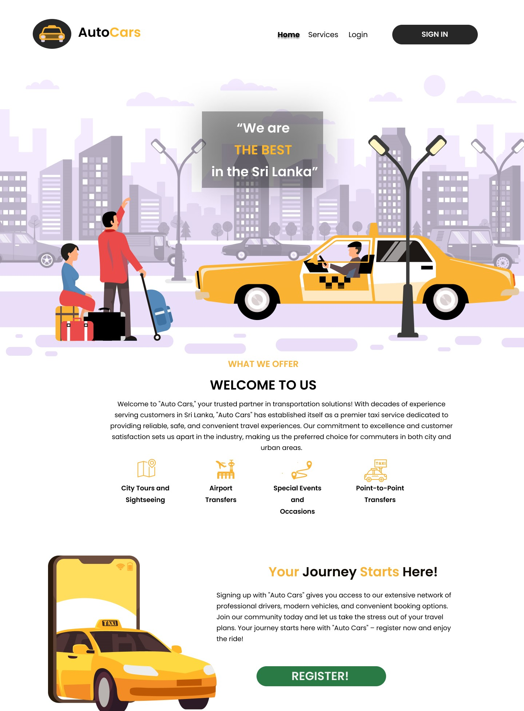
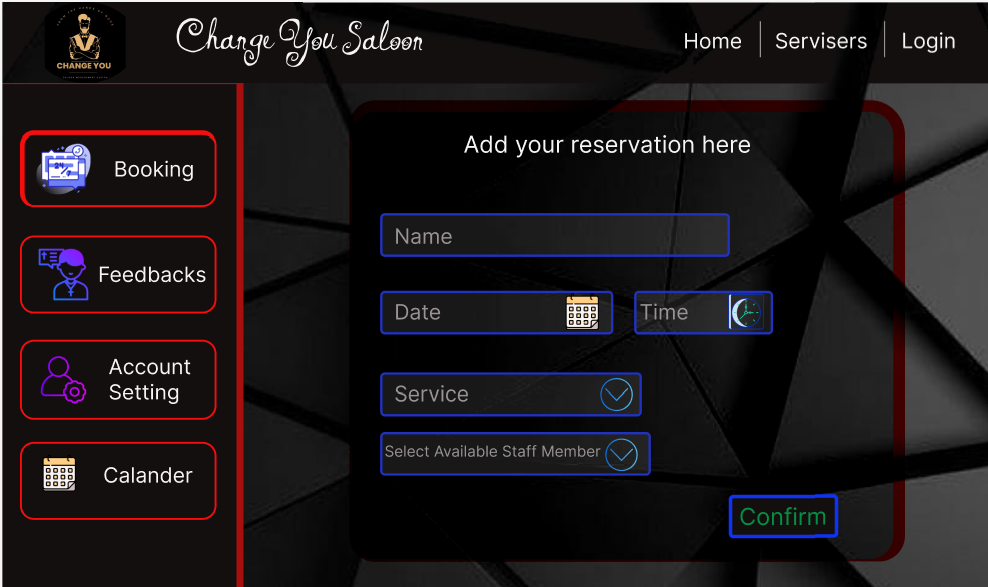
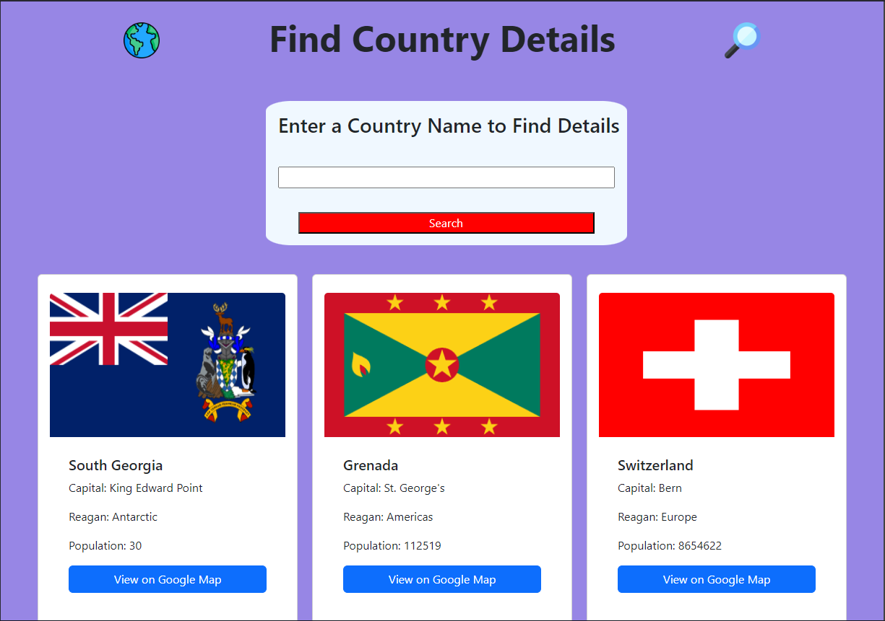
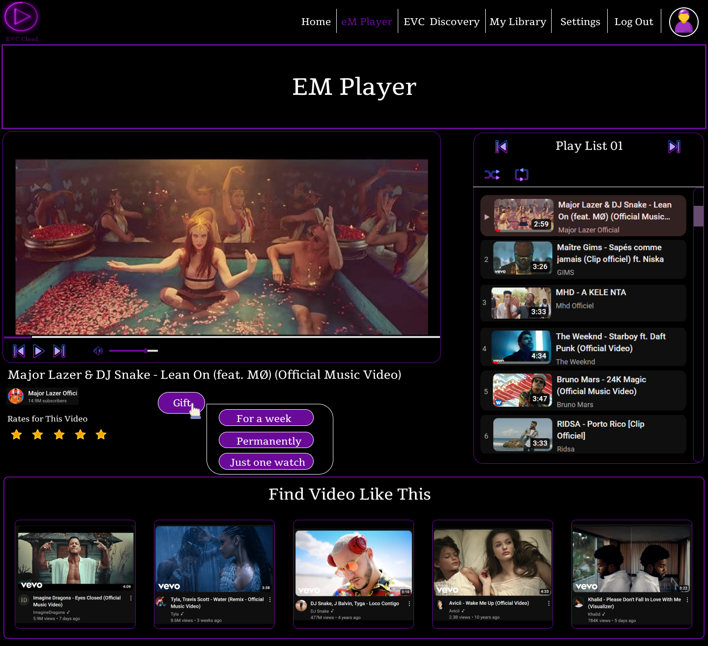
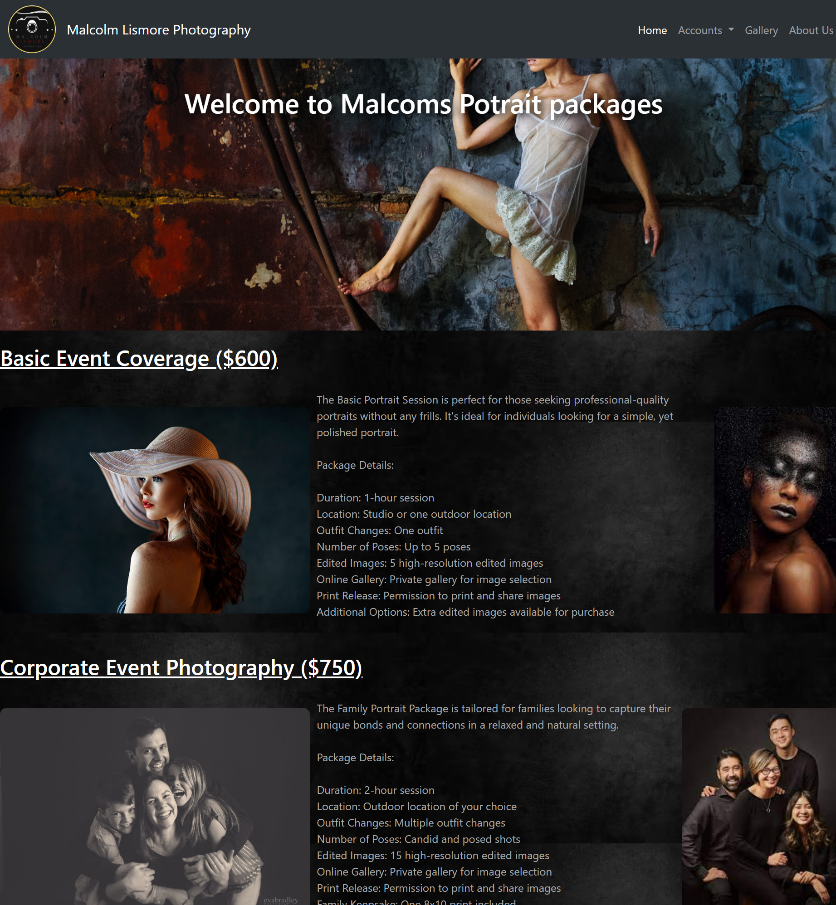

👋 Hello, I'm Bavindu Shan
I am a Software Engineering undergraduate passionate about coding, UX/UI design, and problem-solving.
About Me
I am a dedicated Software Engineering undergraduate with a passion for developing innovative solutions through technology. My academic journey and hands-on experience have allowed me to excel in areas such as UX/UI design, database management, and software development. I have successfully completed diverse projects, including travel systems, customer service platforms, and online video platforms, showcasing my ability to blend creativity with technical expertise. With certifications in Java, machine learning, generative AI, and agile project management, I continually strive to expand my knowledge and skills. I am currently exploring web development and Google AdSense integration, focusing on creating user-centered, impactful solutions.
Projects
Auto Cars System
The "Auto Cars" system streamlines taxi operations with features like easy cab booking for customers, driver availability management, real-time location tracking, client registration, and a rating system, enhancing overall service quality and customer satisfaction.
Git Hub Link : Click me
Bus Seat Reservation System
This project focuses on developing a bus seat reservation system for XYZ Pvt Ltd, aimed at providing customers with an easy-to-use platform for booking and managing bus tickets online.
Git Hub Link : Click me
ChangeU Saloon System(UI)
The ChangeU Saloon system UI offers easy navigation for booking appointments and viewing services. It features a simple service menu, appointment scheduling, customer profile management, and feedback options, all optimized for a seamless experience across devices.
Git Hub Link : Click me
Country Search Site Using API
The Country Information Dashboard is a web-based application designed to fetch and display real-time details about countries using an external API.
Git Hub Link : Click me
E Video Cloud (UI&UX)
The e-Video Cloud (EVC) platform includes features for music producers to manage content, users to search and rent or own videos, an organized library for video management, playback controls in the eM Player, and customizable settings for user preferences.
Git Hub Link : Click me
Grifindo Travels Vehicle Rental Hire System
This project is a C# application designed for Grifindo Travels.The system calculates and records rental and hire charges for a diverse fleet of vehicles, such as cars, SUVs, and vans, offering options for both driver-assisted and self-drive rentals.The system supports(Vehicle Rent Calculation,Day & Long Tour Hire,Sales Record & Analysis).
GitHub Link : Click me
Malcolm Lismore’s Photography Website
Malcolm Lismore’s website showcases his photography and allows clients to easily inquire about services. With a user-friendly gallery and streamlined contact options, the site enhances his online presence and supports business growth.
Git Hub Link : Click me
Quiet Attic Films Database Design
This database supports Quiet Attic Films, a London-based production company, by organizing key data on clients, assets, and production workflows. Designed for efficient data management, it helps streamline operations, clarify roles, and enhance collaboration.
Git Hub Link : Click me
Sampath Food City System
A software solution(CLI) for sales data analysis to address problems(1.Monthly Sales Analysis of Each Branch,2.Price Analysis of Each Product,3.Weekly Sales Analysis of the Supermarket Network,4.Product Preference Analysis,5.Analysis of the Distribution of Total Sales Amount of Purchases).
Git Hub Link :Click me

.png)
.png)